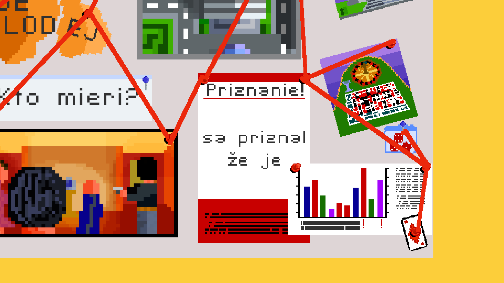

Technológie
Všetky tieto technológie boli použité pri tvorbe tohto projektu.
LUDUM
web hra plná zábavy
Pripojiť sa do miestnosti
Hostuj hru
"...Dňa 14. februára bol ukradnutý diamant z národného múzea, jeho cena je viac ako 1 000 000 eur..."
Pomôžte Detektívovi Ludumovi nájsť zlodeja. Ale pozor! Zlodejom môže byť hocikto!
Ludum je lokálne online multiplayerová hra, ktorej cieľom je spojiť slovné hry a moderné technológie.
Táto hra vznikla ako práca pre Stredoškolskú odbornú činnosť v školskom roku 2018/2019.
Ako hrať
Potrebné veci
Pravidlá hry
Cieľom hry je zistiť, kto z vašich spoluhráčov je zlodej. Musíte ich pozorovať a podľa ich správania ich usvedčiť.
Na začiatku hry sa každému hráčovi vygeneruje rola: DETEKTÍV, ZLODEJ alebo NEVINNÝ.
| Rola | Úloha roly |
|---|---|
| Detektív | Úlohou detekíva je zistiť, kto je zlodej. Na začiatku hry dostane meno jedného zo zlodejov. |
| Zlodej | Úlohou zlodeja je zapadnúť do davu tak, aby nikto nezistil, že je zlodej. |
| Nevinný | Nevinný má za úlohu pomáhať detektívovi, no na začiatku hry nedostane meno ako detektív. |
Po úspešnom vygenerovaní sa pokračuje ďalej v hre.
Je tu však jeden háčik, nikto netuší, kto má akú rolu okrem zlodejov. Tí vedia, kto je spolu s nimi zlodej.
Určite sa však pýtate, ako detektív zistí, kto je zlodej. Zistí to v hernom kole.
Herné kolo
Herné kolo sa skladá z troch častí: Minihra, Hlasovanie a Vyhodnotenie hlasovania.
V Minihre sa každému hráčovi vygeneruje úloha a po zaznení zvončeka je potrebné vykonať, čo tá úloha od hráča žiada. Nevýhodu majú zlodeji, tým sa táto úloha nevygeneruje - musia improvizovať.
Po minihre nastáva hlasovanie, kde hráči prednesú svoje podozrenia a zvolia si, kto je podľa nich zlodej.
Hlasy od hráčov sa spočítajú a vo vyhodnotení sa vyhodí ten hráč, kto má najviac hlasov.
Hra končí ak Nevinní a Detektív úspešne odhalili zlodejov.
Technológie
Všetky tieto technológie boli použité pri tvorbe tohto projektu.
Pripravujeme
Čoskoro prestavíme novú hru
